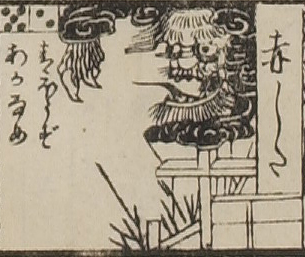

赤舌；アカシタ

赤舌。獅子のような顔と鋭く大きな爪が黒雲から覗いている。目玉が大きく、口を大きく開いて、舌を伸ばしている。水門のような木組みの上に浮かんでいる。
出典：親書誌：U426_nichibunken_0082：新版妖怪飛巡雙六；シンパンヨウカイトビマハリスゴロク／日付：2007／資源識別子：U426_nichibunken_0082_0014_0000
Copyright (c)2010- International Research Center for Japanese Studies, Kyoto, Japan. All rights reserved.